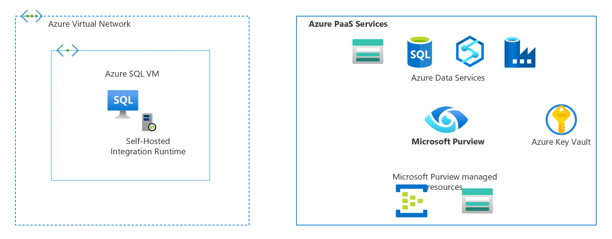
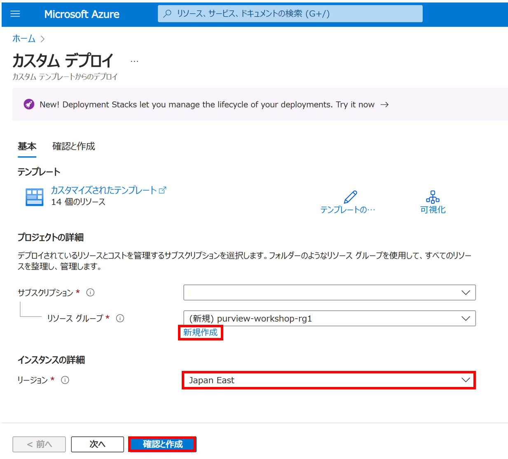
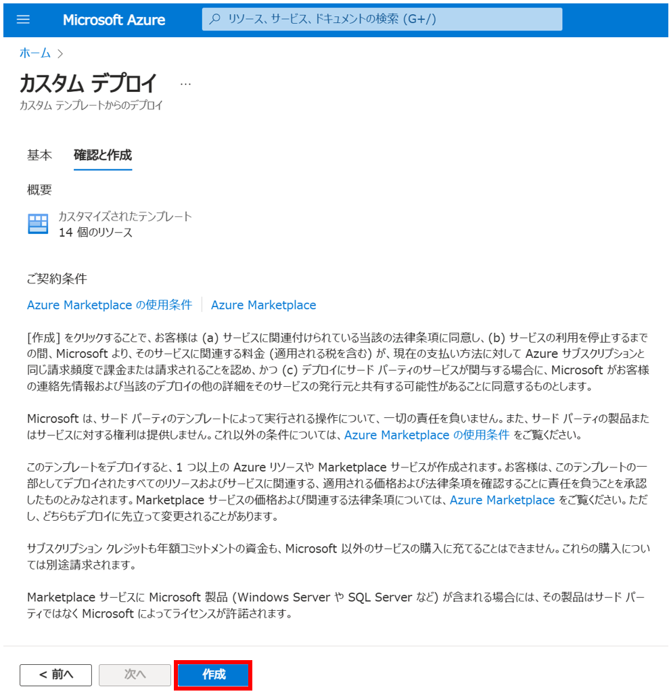
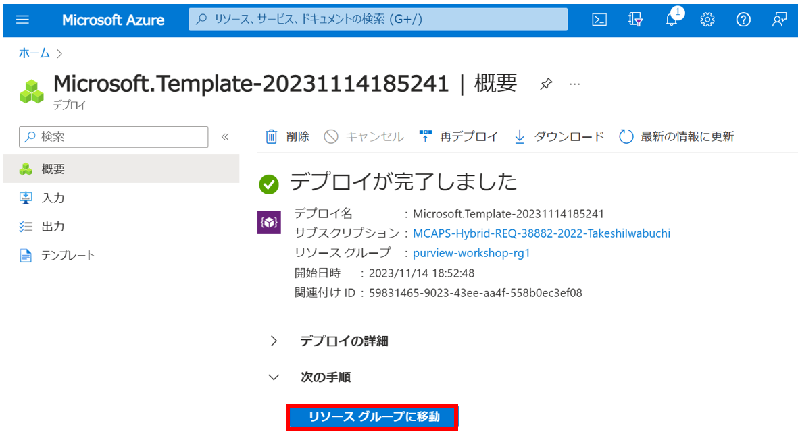
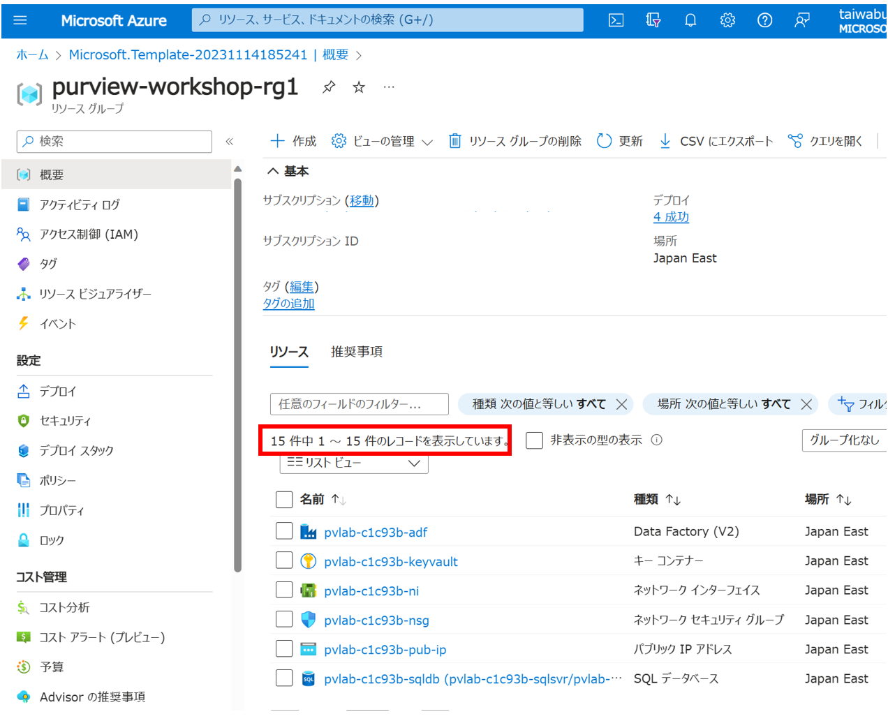

Module 00 - 環境のセットアップ
はじめに
Microsoft Purviewワークショップをすすめるための一連のリソースをプロビジョニングします。
前提条件
本ワークショップを実施するに当たり次のような環境を用意する必要があります。
- 有効なサブスクリプションを持つAzureアカウント
- リソースグループの所有者ロール（リソースを作成し、ロールの割り当てを管理するため）
- サブスクリプションには次のリソース プロバイダーが登録されている必要があります
- Microsoft.Authorization
- Microsoft.DataFactory
- Microsoft.EventHub
- Microsoft.KeyVault
- Microsoft.Purview
- Microsoft.Storage
- Microsoft.Sql
- Microsoft.Synapse
- Microsoft.Insights
Info
リソースプロバイダーの登録は、Azure リソース プロバイダーと種類 を参照してください。
ワークショップ環境
本ワークショップで利用するリソースは本モジュール（Module 00）で作成します。 Microsoft PurviewはModule 01で作成します。 
利用ツールとサンプルデータ
本ワークショップでは以下のツールとサンプルデータを利用します。作業する端末に事前にダウンロード、インストールしておく事をおすすめします。
環境のセットアップ
-
下記のアイコンを Ctrl + クリックしてAzureポータルを開きます。

もしくは、下記のURLからAzureポータルを開きます。 https://portal.azure.com/#create/Microsoft.Template/uri/https%3A%2F%2Fraw.githubusercontent.com%2Ftayganr%2Fpurviewlab%2Fmain%2Ftemplate%2Fazuredeploy.json
-
[リソース グループ]フィールドの[新規作成]をクリックし一意の名前を指定します。 リージョンは東日本、東南アジアなどの有効な場所を指定します。

-
検証が完了したら[作成]をクリックします。

-
デプロイが完了するまで約10分かかります。[デプロイが完了しました]というメッセージが表示されたら[リソース グループに移動]をクリックします。

-
成功した場合はスクリーンショットのように15のリソースが表示されます。
